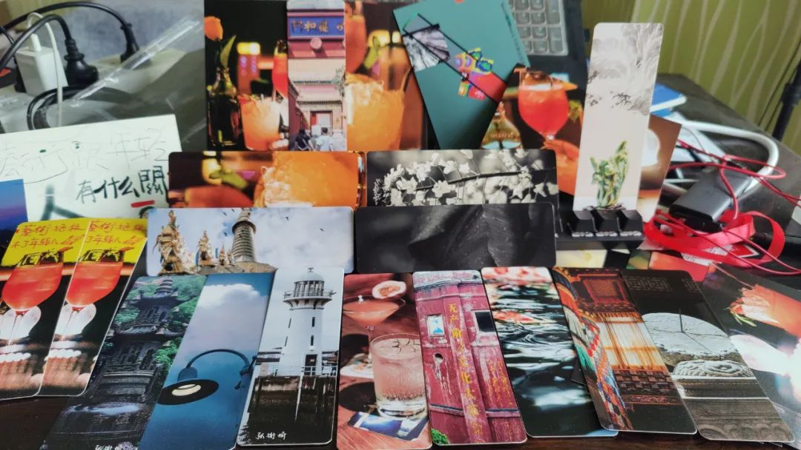
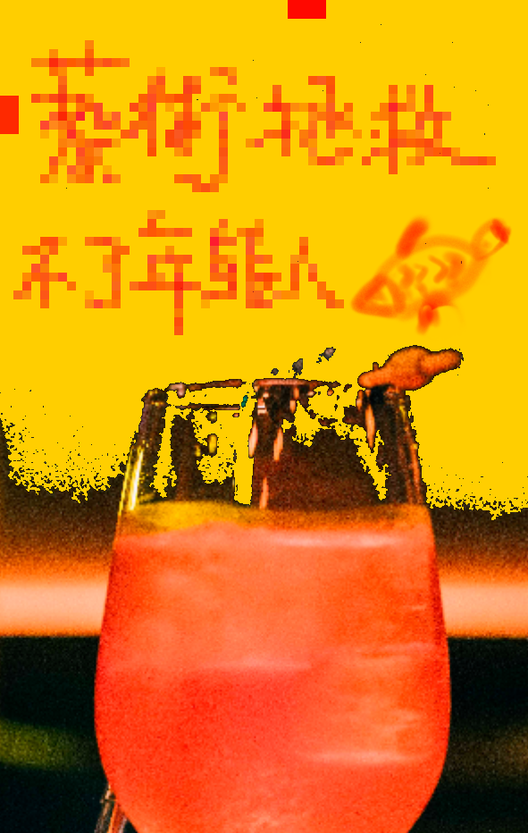

本文是张衔瑜第241篇推文
共计669个字，2张图
标题是在听沼泽的《琴晚》专辑——《酉时废柴》时看到的一条两年前的评论。最近觉得胡说鲅道是用来逃避社交和无聊提问的好方式。关键在于不要纠结一句话两句话的面子问题，在于要用郑重其事的态度让对方知道你就是在鬼话连篇。图好玩，于是发了三天之后要去吃的一家店的照片。紧接着，朋友在底下评论说，中午在这家店门口看到我在等位。请问这是什么水平？景风门。本为金中都的一个城门，被元军攻破。现在是北京地铁19号线的一个站名。搜了一下发现这里在最近一段时间只叫右安门外，属于是用考古地名来重新命名。跟人定位，我喜欢定一些听起来不知道在哪里，但实际上很细节的地方。比如傅家洲，实际上是橘子洲尾再往南有小桥相连的另一个洲；走马楼，又可以叫蚂蚁工坊北，或者IFS北。IFS说实话随便从小区里拎出来一条狗估计都比楼年龄大；火星镇、金星镇、金盆岭、银盆岭、太阳岛、月亮岛、落星田、席草田；砚瓦池，省博物馆西北对角；南倒脱靴、出入是门、平地一声雷。最搞笑的还是直接定位约数上几个老九门以及几个新开小城门。对一座城市的一方区域熟得就好比不看导航的的士司机。换而言之，也是最好的城市定向越野玩家。拜共享单车让我习得了19±0.5 min的时间估算技能。毕竟按照骑行卡的减免规则，每20分钟就得还一次车。好在交通需要灵机应变。这样一来不知道琼系军阀别来无恙乎？某经常夸海口。以后会多注意这一点，得空的时候也夸夸三亚。我的精神挺好的呀，我的好神挺的精呀，挺呀精我的好的，精挺好我的神的呀，我好的神精的呀，的的好呀精我好神的，神我的是泥好，欧豪！
